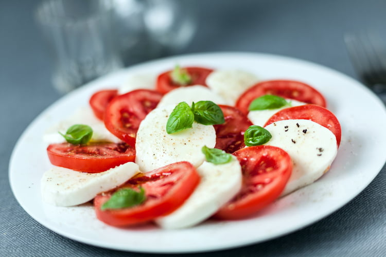

What do you think of lettuces?
You may have noticed, as of today a disruptive comments system has been added to laitues.net. This system named mozzarella offers a commenting feature to resources on a static website. For instance, one generated with tomato.

What's the point?
Commenting allows for example to give your opinion, to criticize or even to trash talk something. To prove this feature's usefulness, we have decided to launch a worldwide poll. This poll will have numerous societal repercussions. It is built around a double objective:
- Efficiency
- Transparency
The issue of this poll is nothing but the title of this article: "What do you think of lettuces?". We encourage you to react by commenting on this article directly. You may do that by using the form available below.